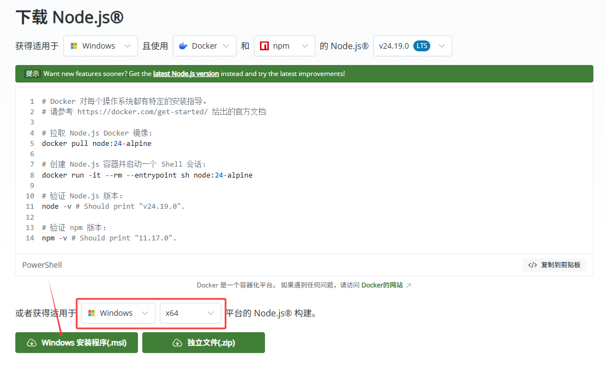
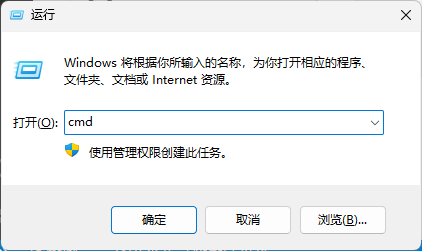
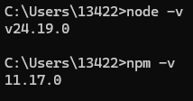
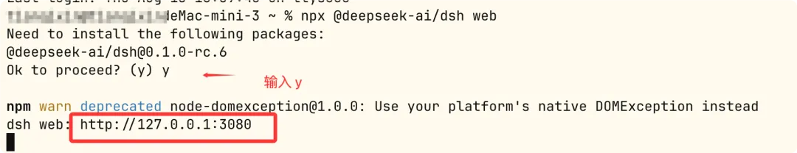
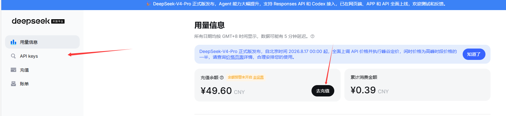
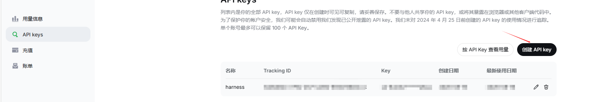
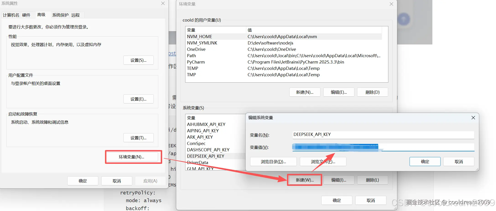

Deepseek Harness 安装教程
Deepseek Harness 安装
1. Node.js 环境准备
安装 DeepSeek Harness 之前，需要先安装 Node.js 运行环境。Node.js 是 Harness 的底层依赖，提供了必要的运行时支持。前往：https://nodejs.org/zh-cn/download

红框是确定好自己的设备型号，我们选择箭头处的MSI安装方法即可，一路按照默认通过即可(担心内存问题可以自己改一下路径)我们按Win+R打开”运行”，然后打开cmd或者powershell都可以，如图：

在里面输入：
node -v
npm -v只要输出版本号，就说明了Node.js安装成功。

2. DeepSeek Harness 安装
Node.js 安装完成后，就可以安装 DeepSeek Harness 了。Harness 通过 npm 包管理器分发，使用 npx 命令可以直接运行而无需全局安装。
在命令行中输入以下命令：
npx @deepseek-ai/dsh web
这表明 Harness 已成功启动，并监听在 3080 端口。我们直接在浏览器中搜索这个网址即可(每次使用Deepseek Harness都要保证终端开着)
每次使用的时候，都是打开cmd 然后输入
npx @deepseek-ai/dsh web就可以打开网站了，如果觉得太长的话，可以使用
npm install -g @deepseek-ai/dsh把dsh安装到全局，这样之后可以直接使用dsh web 打开网站。
打开以后，会要求我们填入API，这时候我们直接去Deepseek的官方购买即可。https://platform.deepseek.com/usage

API页：

后面回到Deepseek Harness中填入API即可开始使用。
3. Deepseek Harness 使用配置
我们可以自己选择文件夹，作为工作区来使用，且拥有四种预设模式：标准模式、PTC模式、极简模式、创造模式，各个模式的适用范围自己探索吧。
对于配置API，也可以打开”C:/Users/你的用户名/.dsh/settings.yaml”这个文件，然后直接把以下内容复制粘贴到原文件内容的下面：
id: llm-deepseek
name: '@deepseek-ai/dsh-llm-deepseek'
config:
apiKeyEnv: DEEPSEEK_API_KEY
baseURL: https://api.deepseek.com
thinking: enabled
reasoningEffort: high
maxTokens: 256000
streamIdleTimeoutMs: 300000
retryPolicy:
mode: always
backoff:
initialDelayMs: 500
maxDelayMs: 10000
jitterRatio: 0.1
defaultContextWindow: 1000000
models:
- id: deepseek-v4-flash
name: DeepSeek-V4-Flash
- id: private-reasoner
description: Company-hosted reasoning model
contextWindow: 512000配置完Yaml文件后，还需要设置系统环境变量。在 Windows 系统中，打开”系统属性”→“环境变量”，在系统变量中新建一个变量,变量名为DEEPSEEK_API_KEY，变量值为你在 DeepSeek 官网获取的 API Key：

设置完成后，重启 Harness 服务使配置生效。
4. 插件安装讲解
一般来说，我们需要加入一些插件来优化我们的使用体验，而我们一般是使用Github
可以使用：
dsh plugin --profile web add "github:用户名/仓库名#path:/子目录"后面那个直接从code中复制出来即可。
首次安装会自动初始化 profile。 以 web profile 为例，安装后会在 profile 的 package.json 中自动追加 dsh.profile.bundles 列表：
{
"name": "dsh-profile-web",
"private": true,
"dependencies": {
"@deepseek-ai/dsh-base": "版本号",
"你的插件名": "link:/本地路径"
},
"dsh": {
"profile": {
"bundles": [
"@deepseek-ai/dsh-base",
"你的插件名"
]
}
}
}移除插件可以使用：
dsh plugin --profile web remove 插件包名这会同时移除 dependencies 依赖和 bundles 列表中的对应层。
注：有的插件要求pnpm，可以直接使用以下指令：
npm install -g pnpm查看版本同样的指令：
pnpm --version实际上，每次下载插件可以点开其github主页看看readme,一般都会指导你怎么安装